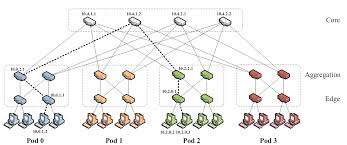

|
Datacenter Fabric Simulator
|
Collaborators: Muhammad Tirmazi, Ivan Zhang, Erik Johnson, Jessica Wijaya
Cloud vendors, including Amazon AWS, Microsoft Azure and Google Cloud, make their datacenter network accessible for clients by abstract out the complexities of the underlying interconnect. For the client, the datacenter network is one large fabric that (somewhat magically) connects all of their rented instances. To the client, the data center fabric is a black box providing the illusion of a large uniform interconnect where each instance is connected directly to every other instance in a mesh or “fabric”. In reality, things are not as simple.
An actual datacenter fabric, however, looks much more like the figure below. The process of designing and deploying a datacenter fabric, and its accompanying network stack, costs upwards of a billion dollars. Hence, computer scientists evaluate a potential design’s performance using a network simulator prior to deploying it in an actual datacenter.

Network simulators are usually serial. To get an intuition for why parallelizing a network is non-trivial, consider the following naive way of dividing the problem. We can simulate network devices in parallel, which involves developing a simulator for a network switch and running parallel simulations for all the switches in the above figure on separate threads. The problem with this approach is that there is a dependence between a switch and every other switch in the network, e.g. you cannot simulate the load on any of the switches at the top of figure 2 (core) without knowing how much data they are being sent by the switches underneath them (aggregation). The same goes for any other set of switches one can think of.
...
...
...
The code to run the simulation was developed in C, for both the serial and parallel version. Therefore, to execute the simulation, you need to have gcc installed in your machine. Siince the parallel simulation was developed with the help of OpenMP and MPI, you will also need to have mpich installed in your machine to run the parallel simulation.
To download our code, you can clone the repository from our github page:
git clone https://github.com/ivzhang2/simulating-datacenter-fabrics
Once the download is complete, the code can be compiled using the command:
make
We used Doxygen to generate the documentation of our codes and visualize the relations between the elements within our modules. To download Doxygen, follow the manual listed in the website. If you prefer to use Homebrew, you can execute the following command:
brew install doxygen
Once, Doxygen is installed, you can easily view the documentation using the following commands:
For MacOS X:
make doc
open docs/html/index.html
For Windows:
make doc
start docs/html/index.html
For Linux/Unix:
make doc
xdg-open docs/html/index.html
The result of our analysis was done on AWS instance t2x2large..., with the following spec:
...
...
1.8.18